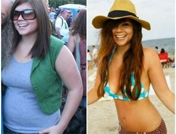

ЕКСКЛУЗИВНО: Новите "капки за строен вид" водят във всички рейтинги по популярност у нас.Майка на две от Пловдив провери средството върху себе си и смъкна 20 кг за 4 седмици!
Намерихме нашумялата история на Катерина с подробности за отслабването. Специално за читателите си редакцията реши да изясни всички детайли относно диетата с и да разбере наистина ли средството е толкова ефективно както се говори.
Журналистката Елена К.
Елена К. | 2 391 558 | 13
изследва уникалното средство за смъкване на излишните килограми, което става все по-популярно у нас.
(Здравето на майките).
През последните 3 месеца читателите ни направо полудяха по сензацията - натуралното средство с екзотини плодове – . То помогна вече на хиляди жени по целия свят радикално да отслабнат и да се сбогуват с мазнините от корема. За тази революционна система за отслабване, наричана "Светият граал на отслабването", вече имаше няколко телевизионни предавания.Стана ясно, че е 100% натурално и достъпно средство.
Много знаменитости като Vicky Pattison, Jessica Simpson, Ricky Gervais и Jonah Hill също са ползвали средството, за да отлабнат. Ефектът е клинично доказан. Не само, че натрупаните мазнини се стопяват, но също така организмът се изчитва от токсините, кожата се подмладява и метаболизмът се ускорява значително. Всичко това е с превантивен ефект, за да в бъдеще не се натрупват мазнини.
При проучванията ни на различни методи за отслабване се изясни, че самият процес на отслабване е много сложна задача и резултатите често за незначителни или временни.
Въпреки това след дълги проучвания и разговори с хора, които приемат , стигнахме до извода, че това средство е наистина пробив в диетологията. Сега ще разберете защо посвещаваме цял материал на този продукт.
ПОСЛЕДНИ НОВИНИ
Много от нас не успяват да свалят килограми, заради отсъствието на определени съставки в менюто ни!
За разлика от съвременните добавки може да сътвори чудеса от гледна точка смъкването на килограми и корекцията на фигурата. Съчетанието на продукта със здравословна диета може да доведе до смъкването на до 20 кг за 2 месеца.
Клинично е доказано, че капките съдържат екстракт от рамбутан, кивано и черимойи, L-карнитин и кофеин, естракт кордицепса, пиколинат на хром, витамини B12 и C.
Какво говорят другите

Всичките ми приятели ми говореха за това средство . Имам проблеми с килограмите още от училище, можете да си представите от колко много години си мечтая да се чувствам добре и да изглеждам добре както моите приятелки. Благодарение на техните препоръки веднъж пробвах и никога не бих го сменила с друго средство. Все так с за първи път успях да смъкна 12 кг и фигурата ми стана безупречна. Обожавам новото си тяло!
Гергана, Свиленград
Прочетете повече >>>

Отдавна започнаха проблемите ми с излишните килограми. От слаба и фина девойка се превърнах в дебелана. Почнах да тренирам, а треньорът ми ме посъветва да пия много вода и 2 пъти на ден да пия . Резултатите бяха шокирщи - минус 14 кг за 4 седмици. Огромно благодаря!
Петя, Варна
Прочетете повече >>>

Като майка на 3 деца всеки ден ми се налага да балансирам между работата, децата и всичко останало....
Мой познат ми даде . Още първата седмица започнах за смъквам. След месец бях се превърнала в това, което винаги съм искала да бъда. Благодаря за всичко, , ти си чудо!
Александра, Бургас
Прочетете повече >>>
ПРОБВАЙТЕ СЕГА


«Тук вече бях отслабнала с 13 кг!», разказва Катерина.
ПОРЪЧАЙТЕ
Причината, поради която повечето диети не постигат желания резултат е в нереалистичните ограничения в начина ни на живот, които налагат. Някои казват, че е важно да приемаме много белтъци, а други подчертават важносттта на въглехидратите. И в двата случая промените в хранителните навици са твърде резки.
В тази статия ще разгледаме набиращата популярност система за отслабване, което не изисква нито диети, нито тренировки, а най-вече - не вреди на здравето. Смятаме това средство за истинска революция в отслабването.
Може би вече сте чули за известните капки по телевизията. Съдържат екстракти от рамбутан, кивано, черимойи, кордицепс, зелен чай и кафе, както и L-карнитин, пиколинат на хром и витамини.
Всички тези съставки спомагат свалянето на излишни килограми и ускорението на метаболизма.
Изследованията на престижния изследователски център UCLA в Лос Анджелис (САЩ) показали, че при редовна употреба средството може да ускори обмяната на веществата и способността на организма да гори мазнини с 318%.
Проблемът обаче е в това, че на пазара има много фалшификати след успеха на , а те са съвършено неефективни в сравнение с оригинала.
Затова пък оригиналната версия на надмина очакванията ни. Хората, решили се на курс с , значително намалиха теглото си, станаха по-енергични и активни. Но не сте сами, ако сте настроени скептично към продукта. Ние също се съмнявахме в ефекта, когато чухме за пръв път за капките.
Все пак решихме, че тенденцията си струва нашето внимание и решихме да проучим истории на хора, които са отслабнали с . Най-интересно е, че всички тези хора не са променили начина си на живот.
Резултатите от : нашите читатели свалиха минимум по 7 кг за месец!
Една от нашите читателки - Маргарита Бояджиева - ни разказа, че е смъкнала над 20 кг за 5 седмици благодарение на. В своя блог тя написа:
«Не мога да повярвам, че беше толкова лесно. Изобщо не си промених навиците, а мазнините се топяха като масло. Обожавам този продукт! Най-накрая намерих средство, което работи!»
Друг отзив на читаталката ни Миглена Николова:
Избраха ме за тестване на натуралните капки , понеже исках да сваля 10-те излишни килограма преди сватбеният ми ден след 3 месеца. Поръчаха за мен курс и ми го доставиха след няколко дни.
Лесно се доверих на , тъй като резултатите от клиничните изпитания бяха много добри и средството беше одобрено от изследователски лаборатории със строги изисквания по отношение на контрола на качеството. Както ми обясниха това е един от най-концентрираните и чисти продукти за отслабване на пазара.
Клинически е доказано, че :
- Нормализира хормоналния фон на организма;
- Регулира обменните процеси, укрепва кожата, косата и ноктите;
- Регулира обмяната на веществата, способства за по-добро усвояване на хранителни вещества;
- Снижава холестерола, регулира работата на стомашно-чревния тракт;
- Извежда шлаките и токсините, гори мазнините и активизира процеса на възстановяване на клетките.
Приемах 2 пъти на ден, предварително разтваряйки капките във вода, в течение на месец.
Резултатите: свалих 12 кг за един месец и почти 3 размера дрехи. Направо ми се плаче от радост!
Първа седмица:
След седмица употреба се удивих колко бързо действат капките. Станах и по-енергична и почти не ми се ядеше - намалява апетита и желанието за сладко.
Чувствах се прекрасно!
Но най-важното е, че в начина ми на живот не се промени нищо. На седмия ден не можех да повярвам какво показва кантара. Бях смъкнала 5 кг. Но не бързах да се радвам, бяха ми казвали, че първо се отстраняват излишните течности от организма. Реших да проверя как ще е нататък.
Втора седмица:
След 2 седмици станах още по-енергична и настроението ми се подобри.Още един плюс - започнах да спя по-добре и не се събуждах посред нощ. Освен това се сбогувах с още 2 кг. - за две седмици общо 7 кг. Почнах да разбирам, че не е просто рекламен трик, а действително работещо средство.
Трета седмица::
Вече нямах никакви съмнения! Разделих се с нови 2 кг и така общо смъкнах 2 размера! Имах много енергия, макар че обикновено през 3-та седмица на диетата организмът се изтощава, а с точно обратното - силите стават повече. Още едно приятно наблюдение - започнах да обработвам храната по-добре и чувството за подут корем изчезна.
Четвърта седмица:
Резултатите бяха невероятни - минус 12 кг за месец с . Реално! В редакцията "Здравето на майките" всички ме поздравяват и съжаляват, че не те са се подложили на този експеримент. Разбира се от една страна нямах толкова много излишни килограми за сваляне, от друга - бях щастлива, че станах по-стройна и енергична.
Естествено продължих да приемам продукта още известно време, тъй като , съдържа антиоксиданти и витамини, които забавят стареенето и правят кожата сияйна.
В новото си стройно тяло се чувствах напълно щастлива.
А сватбената рокля ми седи безупречно!
За 4 седмици свалих 12 кг без особени диети и упражнения.
В заключение, ако още се съмнявате в ефективността на трябва да опитате, за да повярвате; нашият експеримент показа, че резултатите са реални. Ние в редакцията проверяваме повече от 100 диети на година и независимо от първоначалните съмнения се убедихме, че работи. След нашето изследване сме щастливи да съобщим, че тестовете преминаха успешно.
ВАЖНО: * По време на клиническите изследвания се установи, че за да се постигне аналогичен резултат продуктът трябва да се ползва РЕДОВНО.
Дами, не пишем често подобни статии, но средството е толкова добро, че не трябва да се крие от хората.Пробвайте сами и разкажете какво мислите!
Вашето мнение е важно за нас.
Количеството опаковки по акцията е ограничено. Отстъпките действат включително
Коментари:
Жени
Преди 1 час
Бях чувала за този продукт по телевизията, но не знаех как да го поръчам. За моя радост случайно попаднах на този сайт където даже има отстъпка. Така не трябва да плащам пълната цена за нещо, което сама не съм изпробвала. Все пак се надявам, че ще отслабна и аз с него. :))))
Кики
Преди 1 час
Все отлагам диетата, но днес си поръчах тези капкии.
Мерси за подкрепата! сега даже 30 клякания ще направя
Марти
Преди 2 час
Здравейте! Видях ги и аз по телевизията и ще поръчам докато тече акцията.
Обаче казвайте друг пут обезателно дали продъктът е подходящ и за мъже.
Не ни забравяйте ейй :)))
Яница
Преди 2 часа
Ние с мъжа ми си поръчахме и ще изпробваме продукта, благодаря.
Райна
Преди 3 часа
На мама ѝ бяха говорили за тия капки в работата, че са добри
Милена
Преди 3 часа
Преди 3 седмици си бях поръчала, но без промоция. резултатите са реално страхотни.
Не си представях, че натурални средства могат да бъдат толкова ефективни
Милена
Преди 4 часа
Действително ли е 100% натурално? Бих пробвала в такъв случай, не желая да пия химии и лекарства
Живка
Преди 4 часа
Започнах да пия тези капки! Мина само седмица, но наистина съм по-активна и енергична!
Юлияна
Преди 4 часа
Супер често пазарувам онлайн и не мога да повярвам, че не съм чувала за Идеалика, а такава интересна история! Мерси!
Криси
Преди 5 часа
Не мога дори да си мечтая за такива резултати! Поръчах си през вашия линк, благодаря!
Галина
Преди 5 часа
Не мога да пропусна такава оферта! дайте линк моляя
Мирела
Преди 5 часа
Купувайте си само от официалния производител , ментетата не дейтсват